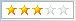
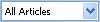

How do I filter what I see?
To avoid information overload, BlogBridge has several handy ways to hide information that is not immediately important.
Seeing only highly rated Feeds
Look at the top of the list of Feeds and you will see the BlogStarz! Filter, which
you can use to show and see only Feeds which have been rated at least the indicated
number of Starz! Just click on a star and you will see only the corresponding
Feeds. Of course to see every single Feed, just click on the leftmost star.
Seeing only articles
that are unread or those that have Keyword hits
Look at the top of the list of Articles and you will see the Article Filter,
which you can use to filter what Articles are shown. You can show only articles
which are still unread by you. You can also show only articles which have one
or more Keyword hits. Keywords are one of BlogBridge's keys to finding the stuff
you care about.